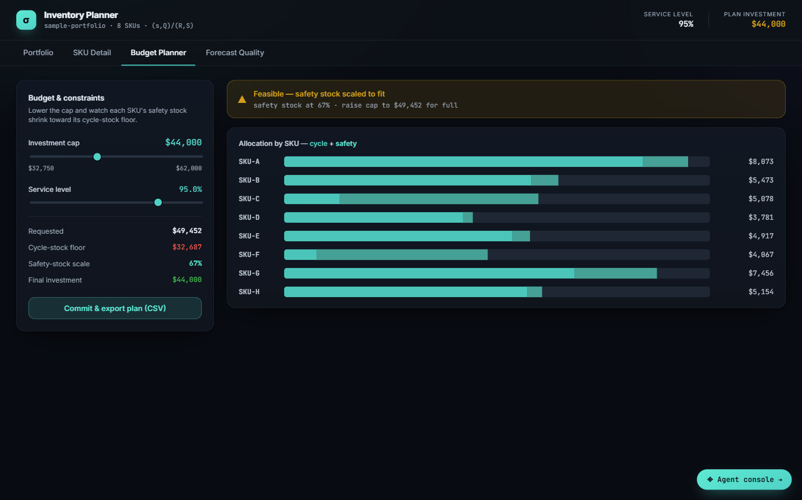

Case Study — Audit Evidence
How many inventory items should an audit sample test?
It depends on the test, and it should never be picked by feel. For a test of controls at 95% confidence with no expected deviations, the attribute sample is 29 items at a 10% tolerable deviation rate and 59 at 5%. For testing a balance, Monetary Unit Sampling uses a reliability factor of 3.00 at 5% risk with no expected misstatement, which sets the sampling interval at tolerable misstatement divided by 3. What the standards require is not a particular table, but a sample you can defend and re-perform.

Worked example
An inventory balance of $2,000,000. Tolerable misstatement of $100,000. No misstatement expected. 5% risk of incorrect acceptance, so a reliability factor of 3.00.
Sampling interval = 100,000 / 3.00 = $33,333. Sample size = 2,000,000 / 33,333 = 60 items. Every dollar in the balance has the same chance of selection, so the large items are tested almost by construction.
What the standards actually say
AU-C 530 and AS 2315 cover audit sampling; AS 1105 covers the sufficiency and reliability of evidence; AS 1215 covers documentation and re-performability. None of them mandates a specific statistical table. What they require is a representative sample design, projection of misstatements to the population, and investigation of every exception found.
The AICPA table values are customary, not required — which is exactly why an engine should compute them precisely and cite them by table, rather than approximate them.
The timing matters too. The PCAOB has amended AS 1215 to cut the window for assembling final audit documentation from 45 days to 14, and lists the amended standard as effective from 15 December 2026. Evidence has to be final-form fast.
What I built
A module for closed-form attribute sampling (binomial, for tests of controls) and Monetary Unit Sampling (Poisson-gamma reliability factors, for balances); a general ledger and trial balance tie-out that classifies reconciling items; and an evidence record for every run — a SHA-256 hash of the inputs, the exact parameters, a formula-version identifier and a QA attestation — so an independent reviewer can re-derive every number on the workpaper instead of trusting it.
Thirty automated tests, each pinned to a published reference value.
Status: the engine core above is built and tested. Wiring it into the same pipeline as the other tools, so it runs end to end like the rest of Kern, is in progress.